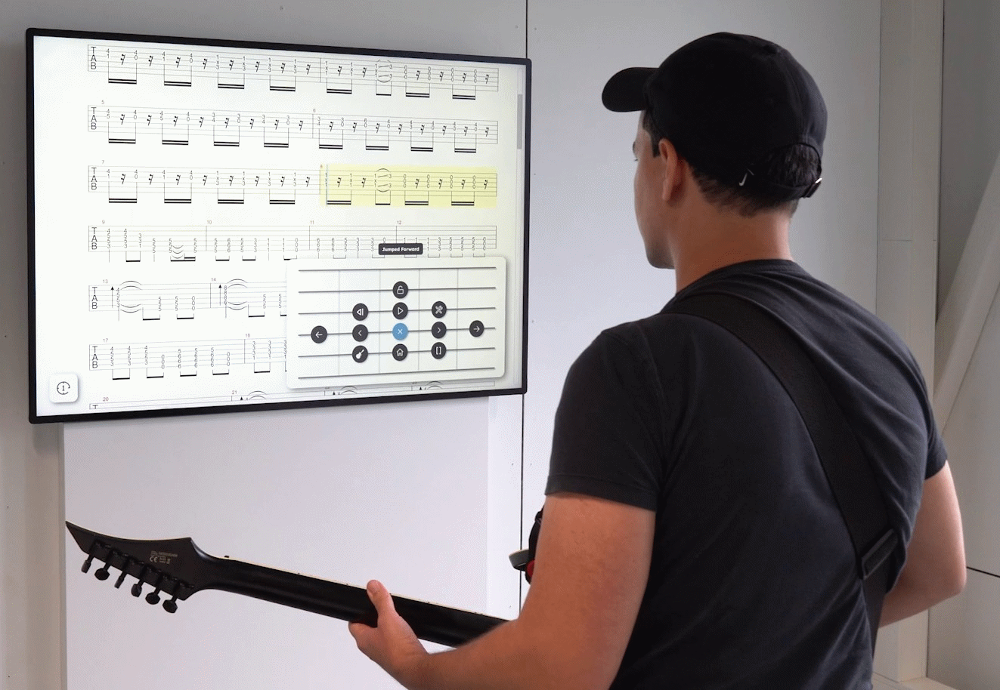

Demonstrating GuitarPie: Using the Fretboard of an Electric Guitar for Audio-Based Pie Menu Interaction


Venue. UIST-Adjunct (2025)
Abstract. Digital tablature interfaces are a de-facto standard for electric guitar hobbyists, featuring capabilities such as playing back tablatures with configurable individual instrument tracks (e.g., drums). Such interfaces are typically controlled via mouse and keyboard or via touch input. Hence, learners often need to switch back and fourth between playing the guitar and using the input device(s) for controlling the interface. In this demonstration, we showcase our audio-based pie menu technique called GuitarPie, which takes the guitar’s audio signals as input for interface control. GuitarPie utilizes the grid-like structure of a fretboard for an intuitive spatial representation of audio-controlled operations. We demonstrate GuitarPie as an integral part of our tablature interface TabCtrl.
Link to this page: